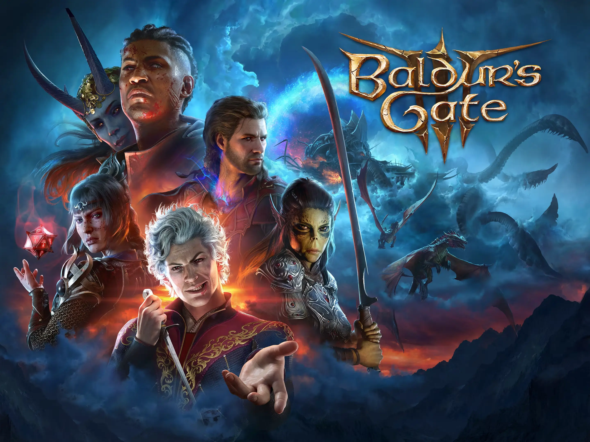

Benvingut/da a la meva mini wiki de Baldur's Gate 3. Aquí trobaràs informació sobre classes, vídeos i un formulari per contactar amb altres aventurers.
| Dia | Hora | Activitat |
|---|---|---|
| Dilluns | 20:00 | Campanya principal |
| Dimecres | 21:00 | Missions secundàries |
| Dissabte | 18:00 | Mode cooperatiu |